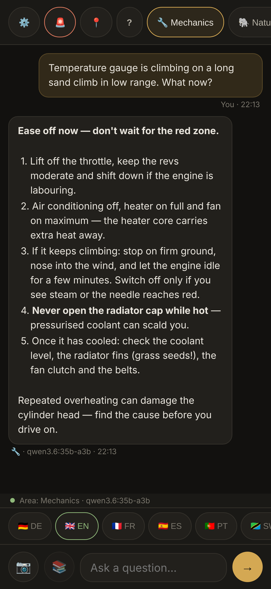
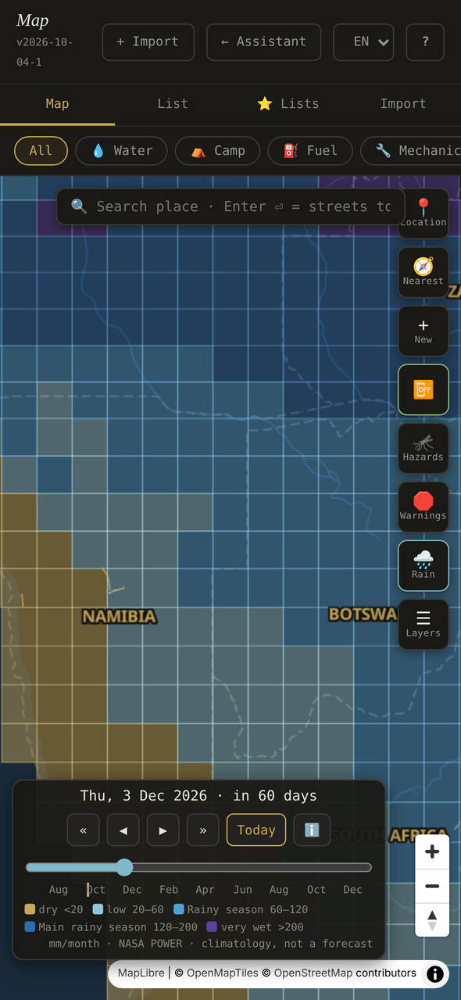
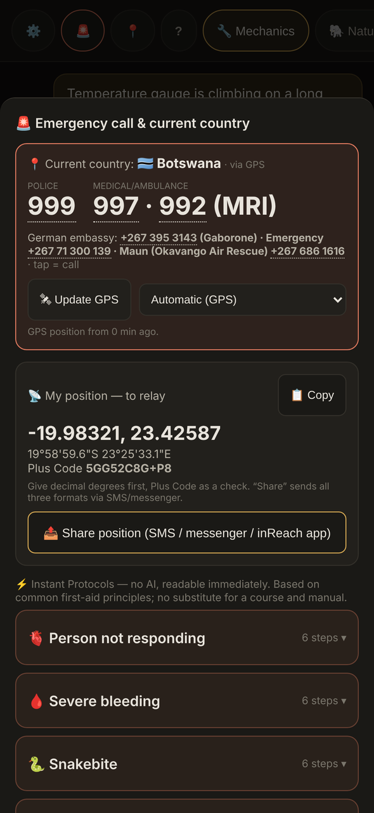

See it in action



What it does
Safari Assistant runs on your Mac and opens in your browser. It covers 16 countries: Angola, Botswana, Burundi, Eswatini, Ethiopia, Kenya, Lesotho, Malawi, Mozambique, Namibia, Rwanda, South Africa, Tanzania, Uganda, Zambia and Zimbabwe.
14 chat modules
Each module has its own system prompt, chat history and model. Twelve run on local models through Ollama; two optional online modules need your own Anthropic API key.
On local models
- Mechanics: vehicle diagnosis and field repair, tuned for the Toyota HZJ78 / 1HZ diesel
- Nature & Wildlife: wildlife and plants, species identification, danger assessment
- Medicine & First Aid: tropical and wilderness medicine, first aid
- Navigation & Terrain: routes, terrain, water crossings, border posts
- Dog: dog health and safety on the road
- Survival & Orientation: water, shelter, orientation, signalling
- Wildlife Photography
- Languages: phrases and translation for the region
- Emergency Chat: calm step-by-step guidance
- Weather & Rainy Seasons: seasons and rain periods*
- Camp Kitchen: cooking with what is in the vehicle
- Fitness: training without equipment
Online, optional
- Security Situation — Live: current security situation, with web search
- Claude — Online AI: general online assistant, with web search
One setting, Settings → Global Model, switches every local module to another model; which model fits your Mac.
* On the Mac, Weather & Rainy Seasons goes online via Claude when an API key is stored.
Your manuals and photos
- Your own manuals: upload PDFs, such as a workshop manual, a first-aid book or a travel guide, and assign them to a module. The module searches them offline and cites document, chapter and page in its answer.
- Photos: attach a photo of a sign, a part, a plant or an animal and ask about it. With the local modules, the model looks at it on your Mac; nothing is uploaded.
- Offline Wikipedia, optional, via
kiwix-serve: modules search it and cite it, also from the iPhone.
Offline map
- Vector map from an offline map file you build once, or online OpenStreetMap tiles.
- Rain: rain-season layer with a day-by-day timeline: monthly rain, temperatures, humidity, wind, solar radiation and the malaria season of that month. Long-term averages, not a forecast.
- Weather panel for your position; when online and on request, a 7-day forecast from Open-Meteo.
- Warnings: official travel warnings from Germany, the UK and the US, fetched automatically whenever the Mac is online and readable offline. Warned districts are drawn as areas, and Safari Assistant tells you whether your position is inside one; the full texts are under Travel Advisories.
- Hazards: hazard zones (malaria, tsetse, big game, crocodiles), plus national park boundaries.
- About 90,000 places from OpenStreetMap ship with the app, one file per country, imported once: campsites, fuel, water, workshops, hospitals, vets and border posts. Your own GPX, KML and GeoJSON files can be imported too.
- Offline place search; online street search only when you press Enter.
Emergency Card
Works without AI.
- Emergency numbers per country, tappable, and German embassy numbers.
- Your position as decimal degrees, degrees/minutes/seconds and Plus Code, for radio or satellite messenger.
- 8 first-aid protocols as fixed text (Instant Protocols), readable in one tap.
- Personal fields (medical, documents, vehicle, contacts), exchange rate, sun times and document deadlines.
iPhone view
On an iPhone in the same Wi-Fi you get the same modules, an emergency sheet and the map, all through the Mac over HTTPS with an access code. The iPhone mode is off after every start and switches itself off after 12 hours without requests from the phone and when Safari Assistant quits. Never switch it on in a Wi-Fi you do not trust; use your own router or a phone hotspot. Set up the iPhone mode
Languages
The interface comes in English, German, French and Spanish; until you choose, Safari Assistant uses your browser’s language if it is one of these four, otherwise English. AI answers follow the interface language, and a separate row above the input box can set the answer language to German, English, French, Spanish, Portuguese, Swahili or Afrikaans. The ? icon on every page opens the guide in the chosen language, offline.
German is the source language: anything not yet translated stays German, and the system prompts are not translated. Languages in the guide
Trip tools
Checklists, document deadlines, a maintenance plan (a template for the Toyota HZJ78 / 1HZ, plus your own items), a logbook for fuel and maintenance, notes, saved answers, chat history and backups.
Which Mac do I need?
Safari Assistant runs on Macs with Apple Silicon only. All offline AI runs on the Mac, so its memory decides which model you can use. Only 36 GB is measured, on one Mac (MacBook Pro M5 Max); everything else is an estimate, not tested with Safari Assistant.
| Memory | Chat and photo model |
|---|---|
| 8–16 GB | gemma4:e4b (light profile)
Estimate 8 GB: very tight, not recommended for the trip |
| 24 GB | gemma4:12b
Estimate untested |
| 32 GB | gemma4:26b
Estimate the default model probably does not fit fully on the GPU |
| 36–48 GB | qwen3.6:35b-a3b (default)
Measured on 36 GB: 22 GB in use, 100 % GPU. 48 GB: estimate |
| 64 GB or more | qwen3.6:35b-a3b (default)
Estimate room for both models |
Every Mac also needs the small gemma4:e4b. Downloads: 6.6–33.5 GB depending on your
Mac, 29.6–33.5 GB for the defaults. With the light profile, Medicine & First Aid and Emergency
Chat also answer from the small model: shorter, less reliable answers.
How to start
Do the large downloads at home on a fast connection, well before you leave: the models are 6.6–33.5 GB depending on your Mac, and the defaults (29.6–33.5 GB) take about 1.5 hours at 50 Mbit/s.
Install Ollama and pull the models
Ollama 0.34 or newer, from ollama.com or with
brew install ollama. These are the default models, for a Mac with 36 GB or more. With less memory, pull the models for your Mac from Which model on which Mac.ollama pull qwen3.6:35b-a3b ollama pull gemma4:e4bGet Safari Assistant and build the app
git clone https://github.com/DarkPirateGo/safari-assistant.git cd safari-assistant ./deploy.sh ./build-app.shThis creates
Safari Assistant.appon your Desktop.Start
Double-click
Safari Assistant.app. It starts Ollama if needed, starts the server and openshttp://localhost:8765in your browser.
Updates, PDF documents and what the scripts do: Quick start in the guide. The offline map (about 8 GB, about 80 GB free space while it builds) and offline Wikipedia: SETUP.md.
What goes online
Offline, nothing leaves the Mac; with a connection, Safari Assistant fetches travel advisories, warning areas, exchange rates and map tiles, and reaches the weather service, the place search or Anthropic only when you use them. No telemetry, no analytics, no fonts from Google.
Safety and limitations
Safari Assistant gives advice about medicine, snakebite, vehicle repair, water crossings and emergencies. The answers come from language models that can be confidently wrong.
- It is not a doctor, a mechanic, a vet or a guide. It does not replace training, a first-aid kit, a satellite communicator or judgement.
- Check anything that could hurt you against a printed manual, the offline Wikipedia or a person.
- Safari Assistant cannot call for help. Carry a real emergency communicator.
Also know this
- No medication doses, by design. The prompts tell the model not to state or invent doses and to refer to a doctor, a vet or the package insert.
- Emergency numbers were checked in September 2026. Verify them before departure.
- The embassy column lists German embassies, for German citizens. Everyone else uses their own embassy or consulate.
- Travel-warning areas are an automated reading of the official text, not official borders. The official text always rules; each entry links to it.
- The rain layer is a 2001–2020 climatology from NASA POWER, not a forecast. Rainy seasons shift by weeks from year to year.
- With the light profile, medical and emergency answers also come from the small model
gemma4:e4b. Macs below 36 GB are not tested with Safari Assistant; see Which Mac do I need? - The system prompts are not translated. They are written for a German-speaking traveller: for example, the embassy numbers are German, and the Languages module gives pronunciation for German readers. Answers still come in the language you choose.
- The Mechanics module and the maintenance plan target one vehicle, the Toyota HZJ78 / 1HZ. A travel profile is on the roadmap. Exchange rates use EUR as the base currency.
- The English, French and Spanish first-aid protocols are translations of the German text, not yet reviewed by first-aid professionals.
- The prompts ask the model to state uncertainty and to say early when professional help is needed. That reduces the risk; it does not remove it.
Status: used by the author for trip preparation. Not yet field-tested. Tested on one machine (Apple Silicon, 36 GB). Read the full section
Licence
Safari Assistant’s code is licensed under the PolyForm Noncommercial License 1.0.0: you may use, change and share it free of charge for any non-commercial purpose. It is a source-available licence, not an open-source licence approved by the OSI. Commercial use needs a separate licence from DARK; ask in an issue. LICENSE
Map data, place names, climate data, the bundled libraries and the QR code encoder keep their own
licences, listed in NOTICE.md.
The names “Safari Assistant” and “DARK” and their logos: all rights reserved; forks must replace them as the
name and logo of their version. The Required Notice: line in
LICENSE, which names DARK as the
copyright holder, stays: the licence requires passing it on.